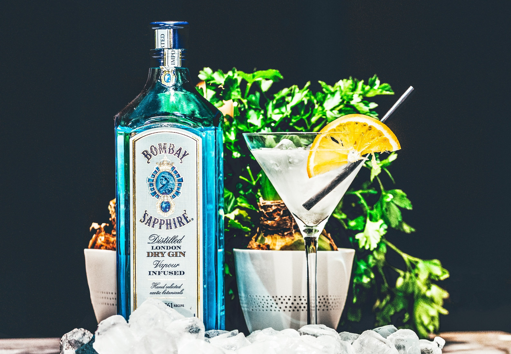
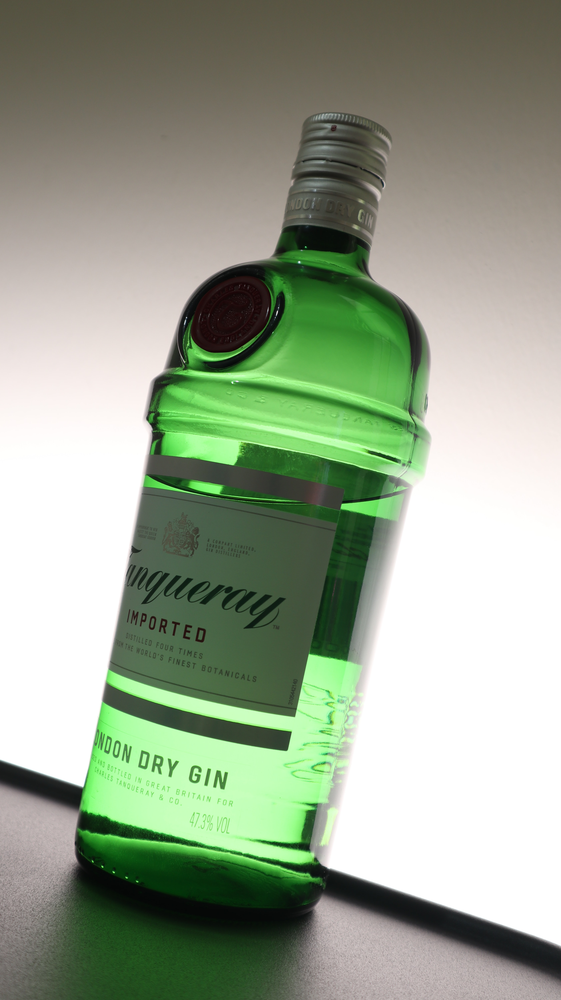

진은 네덜란드에서 약용으로 만들어졌고, 이것이 널리 퍼지면서 네덜란드 선원들에 의해 제네바로 불리게 되었고, 17세기말 영국에 전파되어 획기적인 발전을 하고 이름도 진으로 바뀌게 되었다. 그 후 미국에 전파되어 칵테일용으로 널리 쓰이게 되었다.
진은 이뇨효과가 있는 주니퍼 베리, 코리앤더, 안젤리카 등을 침출시켜 증류한다.
드라이 진 : 런던 드라이 진과 아메리칸 엑스트라 드라이 진이 있다. 드라이진은 칵테일로 많이 쓰이고 있다.
 네덜란드 진
올드 톰 진
플레이버드 진
슬로 진